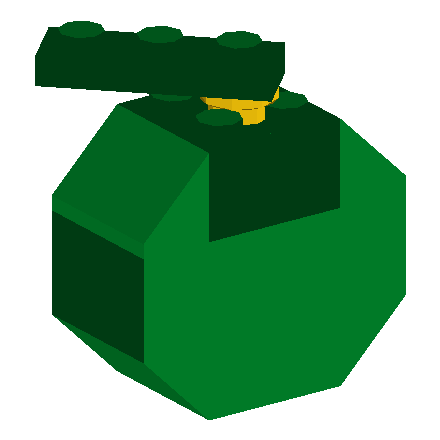
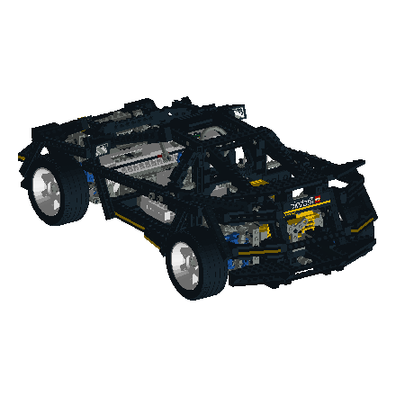
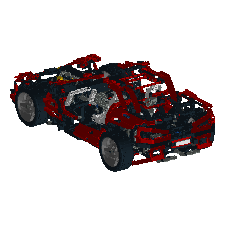
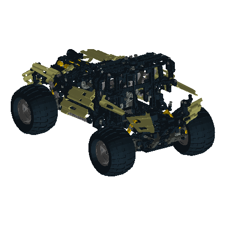
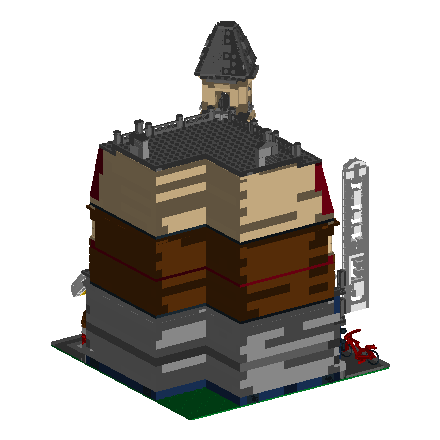
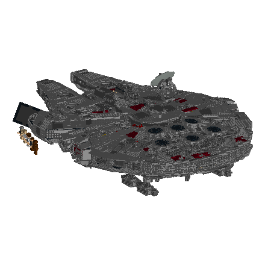
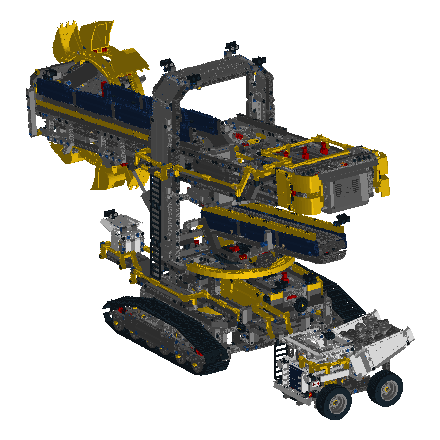
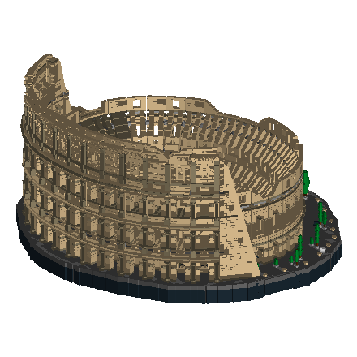

Which models we test against, and what each one is for
Fifteen candidate models from the 1,464-model Official Model Repository pull, chosen to span the properties the rules actually exercise — not for variety. Every render below is generated from the model's own geometry by the verifier's resolver. Seven are rotatable: click any plate marked rotate.
Each plate credits the person who reproduced the set. That attribution is the point: these are fan reproductions, not LEGO's own CAD data, which is exactly why a clean result against them is evidence rather than proof.
Canon
~16
Berard-deck reproductions. Authoritative illegal exemplars. Proves a rule fires at all.
Injected
~300
One recorded mutation into a verified host. Proves detection survives real noise.
Gold
40–80
Verified reproductions. A HARD hit here is a genuine false positive.
Wild
1,464
The full pull. Regression and performance only — never an oracle.
What we need to assemble
complete requirement
Counts, not samples. Every figure below is computed from the 1,464-model corpus and the 46-rule build-rules file, not estimated.
Canon pairs
31
62 files to author
Already fixtured
11
rules with a pair today
Gold models
60
of 1,264 eligible
Hand-verified
20
≈12–15 hours
Injected
300
generated, not stored
Excluded
200
flex-path, 13.7%
Canon — the bottleneck
31 to build · 11 done
One illegal model and one legal near-twin per rule. A rule without a pair cannot be written test-first, which is why 31 of the corpus's 47 rules have no predicate today. 19 pairs are rendered in the catalogue below; the rest are still to author.
Ready to build
19
unblocks its rule at once
Blocked
12
missing a dependency
Legal twins
5
the sharpest tests
Exemplars drawn
19
rendered below
Every rule, described
47 rules · 19 with exemplars
The full build-rules corpus, with each rule's statement, the reasoning recorded against it, its predicate where one exists, and the parts it concerns. Where a rule is geometric, a minimal exemplar pair is rendered — illegal beside its legal near-twin. Where it isn't, the reason is stated rather than an image invented.
Implemented — a predicate exists and runs today 11
B-06
NO_FLOATING_PARTS
hardimplementedassets/exemplars/B-06.legal.png
Every element must be connected to the model.
Every element must be physically attached to the rest of the model. A part with nothing holding it is either a mistake or a piece that would simply fall off when the model was lifted. This is the most common failure of a naive generator, which places parts at plausible coordinates without ever checking that something holds them there.
A System stud may not be inserted into a Technic pinhole.
A System stud must not be driven into a Technic pin hole. The hole is bored for a pin, not a stud, and forcing one in stresses both parts. Current first-party rules ban this outright — a stricter position than the 2006 presentation, which called it legal but inadvisable. Older sets built before the ban may contain it legitimately.
Predicateno edge of type stud->technic_hole exists
Parts may not be positioned at sub-detent rotations.
A part held by a single stud must sit at a detent — a quarter turn. Between detents nothing locates it: the part is held only by friction on the stud's shoulder and will drift out of position. Parts that are rotationally symmetric about their connection axis are exempt, because on those a rotation is not an observable difference.
The 9 matrix values are ROW-major: (a,b,c) is the first row. (a,d,g) is the image of the X axis.
A part's placement matrix must be a well-formed rigid transform — a rotation, optionally mirrored, with no shear and no scaling. It cannot detect a transposed matrix: the transpose of a rotation is its inverse, which is itself a perfectly well-formed rotation, just the wrong one.
-Y is up. Stack upward by decreasing Y. Part origin sits on the TOP face.
Vertical placements must sit on the system's own lattice. In LDraw, negative Y is up, a part's origin sits on its top face, and stacking never adds the stud height — a brick on a brick is exactly 24 LDU, because the stud is swallowed by the tube beneath it.
Model type-1 lines use concrete colour codes. Parts use 16. Colour 24 never appears on a type-1 line.
A model's own part references must carry a real colour. Colour 16 means \u201cinherit from whoever placed me\u201d, and the top-level model has no such caller, so a 16 there resolves to a fallback mustard rather than the intended colour. Colour 24 is the edge colour and never belongs on a part reference at all.
Predicatecolour != 16 AND colour != 24 at top level
Check kindtransform
No exemplar image: not geometric — a colour code, invisible in a render.
Placements land on the System's own 2 LDU lattice. The ordinary studs-up lattice is 10 in X/Z and 4 in Y, but SNOT and Technic constructions legitimately land between.
Horizontal placements should sit on the system's lattice. Deliberate offsets are ordinary — jumper plates and sideways building both leave it on purpose — so this reports rather than blocks.
First 0 FILE block is the main model. Blocks are a flat list; nesting is by reference only.
A multi-part document is a flat list of named blocks, the first of which is the model itself. Blocks nest by reference, never by being written inside one another, and nothing may appear before the first block opens.
Predicateno content before first 0 FILE; no duplicate FILE names; reference graph acyclic
Check kindtransform
No exemplar image: not geometric — file structure, not shape.
Do not reference ~Moved to aliases or ~-prefixed hidden parts.
A part that has been superseded should be referenced by its replacement rather than its old number. The old number still renders, so this is a cataloguing matter rather than a build defect — but roughly a sixth of the parts directory is superseded or hidden entries that no new model should be reaching for.
Predicatereject any part whose description line starts with '0 ~'
Never invent part numbers. Resolve against the real library.
Every part reference must resolve to a real part. An invented or mistyped number renders as nothing at all, so the model is quietly missing a piece rather than visibly wrong.
Every line must be a valid LDraw line type with the correct token count and numeric fields.
Every line must be a valid LDraw line: a recognised type, the right number of fields, and numbers where numbers belong. Without this, a malformed line is noticed by the parser and then quietly discarded.
Predicateno tokenizer error remains unreported
Check kindtransform
No exemplar image: not geometric — a malformed text line.
Nothing may be placed against the face a stud points into; the moulded wordmark adds ~0.14 mm to every stud.
Nothing may be placed flat against the face a stud points into. The moulded wordmark on the stud's crown stands roughly 0.14 mm proud, so a surface pressed against it bears on the lettering rather than on the stud itself. Two first-party sources twenty years apart give the same warning.
Predicateinflate stud radius by 0.35 LDU, then test interference EXCLUDING declared mating hotspot pairs
Courses must overlap; vertical seams must not repeat between adjacent courses.
Courses must overlap, and a vertical seam must not repeat between adjacent courses. A column of aligned seams is a fracture line running through the wall, exactly as it is in bricklaying — the overlap is what carries load across the joint.
Predicateno coincident vertical seam x between adjacent courses; min overlap 2 studs
The receiving element must not be smaller than what is pushed into it.
A connector must not be pushed into a receiver smaller than itself. This is the one rule in the corpus that a plain geometric interference test can catch, because the overlap is real rather than a fraction of a millimetre.
At most one stud may enter a row of Technic holes. Studs and holes are on slightly different pitches, so each additional stud compounds the mismatch until the parts are under real strain.
Predicatecount(studs entering technic holes of one part) <= 1
A System stud in a Technic hole may not be bridged.
A stud sitting in a Technic hole must not be fixed at both ends. Bridging it removes the small amount of give that made the connection tolerable, and the parts then fight each other.
A plate may not be wedged edge-on between two studs.
A plate may not be wedged edge-on between two studs, although a tile in exactly that position is permitted. The two are indistinguishable by shape in LDraw — only the part class separates them. That makes this the sharpest available test of whether a checker is reasoning about what a part is, or merely matching where it sits.
Predicatepart_class == plate AND orientation == edge_on AND wedged between studs
Click hinges may only be set at multiples of 22.5 degrees.
A click hinge may only be left on a detent — a multiple of 22.5 degrees. Between positions it rests on the tooth crests rather than seating in the valleys, and the teeth wear.
System side-studs and Technic holes are not co-planar.
A System side-stud and a Technic hole do not sit at the same height. Joining them forces a small vertical misalignment that is then carried through everything built on top.
Technic half-beams and System plates do not stack cleanly together. A half-beam is 10 LDU thick against a plate's 8, so the two only come back into alignment every 40 LDU.
Hinge-plate height mismatch puts subsequent geometry out of system.
A hinge plate does not occupy a whole number of plate heights, so anything built above one sits off the standard vertical grid. Legitimate deliberately, but easy to do by accident.
Slope part NAMES are systematically wrong. Use measured geometry.
A slope part's name is not its angle. The part called \u201c33\u00b0\u201d is 26.5651\u00b0 — the arctangent of one half. Reasoning from the name rather than the measured geometry injects roughly 3 LDU of error for every stud of run.
Only theta in {0,90,180,270} maps the stud lattice onto itself. N=4 is the ONLY exactly-closing rosette.
Only quarter turns map the stud lattice back onto itself, so a four-fold arrangement is the only one that closes exactly. Everything else leaves a gap. Closing in angle and closing on the lattice are different tests, and an arrangement can satisfy the first while failing the second.
Every curved slope in the System is elliptical; none is circular.
Every curved slope in the system is elliptical, not circular. Their transforms are sheared, so the profile is an ellipse — and equal matrix column lengths do not imply a circle, which is exactly how this is usually missed.
A run must never be shortened to force a curve into it. The bow that results is far larger than the shortening suggests: taking a single LDU out of an eight-stud run produces almost 8 LDU of deflection, and the parts carry that stress permanently.
A tile is a slip plane. Its smooth top is exactly why it is useful as a finished surface and exactly why nothing structural may pass through it — a tile in a load path is a joint waiting to slide.
A sideways sandwich must come back to the grid. Because five plates are exactly two studs and three plates are exactly one brick, only certain combinations of plate and brick thickness land back on the lattice when turned through ninety degrees.
1x2 bracket child face offset from the parent edge is 12 LDU — NOT grid-commensurate.
A bracket's offset face does not land on the stud lattice. The child face sits 12 LDU from the parent edge, which is not a whole number of studs, so anything built from it is off-grid until deliberately brought back.
A working mechanism must turn without stressing its elements. Long gear trains accumulate friction and backlash until something binds or a tooth skips.
Predicatedrivetrain graph depth
Check kindgraph
No exemplar image: not directly visible — a property of a drivetrain in motion.
No press-fitting an element that has no travel stop.
An element with no travel stop must not be press-fitted onto a pin or shaft. With nothing to arrest it, insertion depth is unbounded and the part can be driven until it splits.
A pin must not be forced into a bore that is not a Technic hole. Other bores are narrower, and driving a pin in splits them or widens them permanently.
Polycarbonate must not slide against polycarbonate.
Polycarbonate must not be made to slide against polycarbonate. The two surfaces gall and cloud one another, and a transparent element loses its clarity permanently.
Predicatematerial table (part x colour)
Check kindpart_identity
No exemplar image: needs a part-property table: PC vs ABS materials.
Emit no BFC statements in a model file. They are for part files.
Back-face culling statements belong in part files, which contain polygons. A model file contains part references, so the statements have nothing to act on.
Check kindtransform
No exemplar image: not geometric — a meta-command in a file.
Do not compute part origin as the centroid of its footprint. Use a per-part table.
A part's origin cannot be computed from its shape. Barely a quarter of parts sit where the obvious rule would predict, and a plain 2×1 slope breaks it outright, so origins must be looked up rather than derived.
Check kindnone
No exemplar image: not geometric — a generator convention about where a part's origin sits.
For Pythagorean-triple rotations, emit the exact rational cos/sin, never cos(36.87 deg).
Rotations that come from whole-number triangles should be written as their exact ratios rather than as a rounded decimal angle. A 3-4-5 turn is exactly 0.8 and 0.6; writing the angle instead introduces error that compounds through nested assemblies.
No exemplar image: not directly visible — the precision of a rotation's coefficients.
Stud engagement must be budgeted against hanging mass.
Stud engagement has to be budgeted against the weight it carries. A clutch is strong in shear and weak in tension, so a hanging load needs far more studs than one resting on top of its support.
No exemplar image: not directly visible — a load budget in newtons.
Rules recorded so the tool knows what is permitted — the near-twins that stop a checker from pattern-matching on shape.
G-01
TILE_BETWEEN_STUDS
legalassets/exemplars/G-01.legal.png
A tile wedged between two studs is LEGAL. Contrast L-10, which is the same geometry with a plate.
A tile wedged edge-on between two studs is permitted. This is the legal half of the sharpest pair in the corpus: the illegal case is the same geometry built with a plate, and nothing but the part class distinguishes them.
Clipping onto a tile is legal on modern clip mouldings.
Clipping onto a tile is permitted on current clip mouldings. Older mouldings did not hold reliably, which is why this is often mistakenly listed as forbidden.
The 5-plate / 2-stud SNOT identity is legal and exact (40 LDU).
Five stacked plates are exactly two studs wide — 40 LDU either way. This identity is what makes sideways building work at all: it is the point at which a vertical stack and a horizontal run agree.
Corner-round NxN parts are quarter annuli: R_outer = 20N, R_inner = 20(N-1), wall always exactly 20 LDU.
A quarter-round corner part is an exact quarter annulus: its outer radius is a whole number of studs, its inner radius one stud less, and its wall is always exactly one stud thick. Four of them are the only exact closed ring the system offers.
Any dimension over 1 m requires a steel armature; brick becomes cladding.
Beyond about a metre in any dimension, brick alone will not hold its own shape. At that scale the model needs an internal armature and the brick becomes cladding on it.
The flex-path exclusion is not evenly spread. It removes over half the large models and nearly all the huge ones, which is the real constraint on this corpus — not how many we want, but how many exist.
Band
In corpus
Flex-excluded
Eligible
Target
tiny
271
2
269
8
small
706
38
668
24
medium
382
98
284
16
large
96
55
41
10
huge
9
7
2
2
At the large band we can choose 10 from 41. At huge, both eligible models are taken because only two exist.
Every eligible large model 41
Listed in full because this is the band where choice is genuinely constrained.
Set
Parts
Model
8258-1
4,242
main
8273-1
4,089
main
10272-1
3,522
main
76139-1
3,491
1989 Batmobile - main
10253-1
3,134
main
10270-1
3,125
Complete
76042-1
3,033
Main
8275-1
3,021
main
10251-1
2,745
Brick Bank
31197-1_Version-A
2,645
Main
31199-1_Hulkbuster-Mark-I
2,643
Marvel Studios Iron Man - Hulkbuster Mark I
71006-1
2,636
main
10224-1
2,634
Main
364-1
2,626
Harbour Scene - Main File
21311-1
2,469
main
10030-1
2,450
main
10246-1
2,450
Main model
10185-1
2,397
Main Model
10256-1
2,360
main
10197-1
2,358
main
6989-1
2,352
Mega Core Magnetizer
21010-1
2,277
Robie House
10298-1
2,205
main
10182-1
2,183
Main Model
10212-1
2,134
main
21325-1
2,131
Medieval Blacksmith
10184-1
2,084
Main
75060-1
2,057
complete
75181-1
1,977
Y-Wing Starfighter - main
10265-1
1,912
Ford Mustang 1967 Complete
10143-1
1,909
main
10018-1
1,869
main
6339-1
1,793
main
10295-1
1,792
Porsche 911 Targa Complete
5571-1
1,752
Giant Truck - Truck
41999-1
1,571
main
3185-1
1,564
main
10227-1
1,534
subModel-89
9396-1
1,515
Main
9395-1
1,513
Main
10267-1
1,502
main
Every eligible huge model 2
Set
Parts
Model
31203-1
10,953
Main
10276-1
5,433
main
Injected — one operator per rule
300 total
A Gold host plus exactly one recorded mutation. The label is certain because we made it; the context is real because the host is. Only rules with a working predicate can be injected against — an undetected injection is a recall gap, reported rather than removed.
Rule
Mutation operator
Count
B-01
retarget a stud connection onto a Technic pinhole
34
B-05
apply a sub-detent yaw to a single-stud asymmetric part
34
B-06
translate one sub-assembly out of contact
34
E-01
transpose or shear a placement matrix
34
E-02
move a placement off the 2 LDU vertical lattice
33
E-03
rewrite a top-level colour to 16
33
E-05
move content before the first 0 FILE
33
E-07
substitute a current part with its deprecated alias
33
E-08
replace a part number with one that does not resolve
32
Never injected into Wild models: a “missed” injection there may be a model that was already violating.
Specimens
15 illustrative
Rendered from their own geometry through the verifier's resolver, to show what each band and technique class actually looks like. Seven are rotatable.
Tiny
under 50 parts
Single-block files with no 0 FILE meta — the fallback path nothing else exercises.
7276-1
Mango
Reproduced by Merlijn Wissink
Parts
6
Triangles
1,906
Pure System
No 0 FILE block at all — exercises the single-block fallback path.
7274-1
Orange
Reproduced by Merlijn Wissink
Parts
7
Triangles
1,600
Pure System
Same fallback path; a second sample to prove the first wasn't a fluke.

7278-1
Melon
Reproduced by Merlijn Wissink
Parts
8
Triangles
—
Pure System
Smallest useful three-way check on the no-FILE branch.
Small
50–300 parts
Hand-verifiable end to end. The workhorse of the verified core.
1210-2
Small house
Reproduced by N. W. Perry
Parts
135
Triangles
7,146
Pure System
Baseline for the grid rules with no Technic or SNOT confounders.
850-1
Fork-Lift Truck
Reproduced by Merlijn Wissink
Parts
216
Triangles
111,898
TechnicVintage
Expert Builder era. Predates most rules the tool enforces — the anchor for the period-mixing problem.
41588-1
The Joker
Reproduced by Damien Roux
Parts
241
Triangles
28,621
MinifigureClip & bar
Clip and bar connections — the known SNAP_CLP gap, where clips carry no gender data.
7903-1
Rescue Helicopter
Reproduced by Marc Giraudet
Parts
270
Triangles
107,379
HingedMixed
Carries the four genuine B-05 violations: 3040b×2 and 6091×2.
Medium
300–1,500 parts
Submodel nesting becomes real, and so does transform-composition depth.
10001-1
Metroliner
Reproduced by Zoltán Kéri
Parts
872
Triangles
119,993
SNOTNested
Contains the non-orthonormal subpart transform that forced E-01's tolerance work.

8880-1
Super Car
Reproduced by Orion Pobursky
Parts
1,366
Triangles
—
Technic
Technic maturity — pins, axles and pinholes at density.

8448-1
Super Street Sensation
Reproduced by Orion Pobursky
Parts
1,331
Triangles
—
HingedFlex-path
1,331 parts across 183,705 lines. Generated flex geometry dominates the file.

8466-1
4×4 Off-Roader
Reproduced by —
Parts
1,327
Triangles
—
Flex-path
The extreme case: 1,327 parts, 311,435 lines — 235 lines per part against a corpus median of 3.3.
Large
1,500–5,000 parts
Component logic and performance under genuine load.

10182-1
Café Corner
Reproduced by Max Martin Richter
Parts
2,183
Triangles
—
SNOTModular
Modular SNOT construction — the grid rules under real load.

10179-1
Millennium Falcon (UCS)
Reproduced by Roland Dahl
Parts
4,545
Triangles
—
CurvedSloped
Curved and sloped surfaces — elliptical slopes and near-miss angles.

42055-1
Bucket Wheel Excavator
Reproduced by Philippe Hurbain
Parts
4,385
Triangles
—
TechnicFlex-path
Large Technic with flex elements — both stress classes at once.
Huge
over 5,000 parts
Performance ceiling only — too large to hand-verify meaningfully.

10276-1
Colosseum
Reproduced by Orion Pobursky
Parts
5,433
Triangles
—
Pure SystemRepetitive
Performance ceiling. 5,433 parts of highly repetitive construction.
The class excluded from Gold
200
models · 13.7% of the corpus
Models carrying 0 !LDCAD GENERATED geometry — 887 PATH configurations (hoses, cables, chains) and 108 SPRING, totalling 680,623 inline polygons. LDCad writes this as fallback content and regenerates it whenever endpoints move, so it is a snapshot rather than the model. It carries no part identity, is invisible to every rule the tool has, and breaks the inventory cross-check because a hose modelled this way contributes no part references. Excluded from Gold, kept in Wild as a deliberate stress class.
Renders produced by baking each model to world-space triangles through the verifier's own resolver, then rasterising with a z-buffer at lo-res primitive detail. Generated flex geometry is skipped during baking, which is why the flex-heavy models render at all. Colours resolve through LDConfig.ldr. Part counts are type-1 reference counts; triangle counts are post-decimation for the rotatable models.